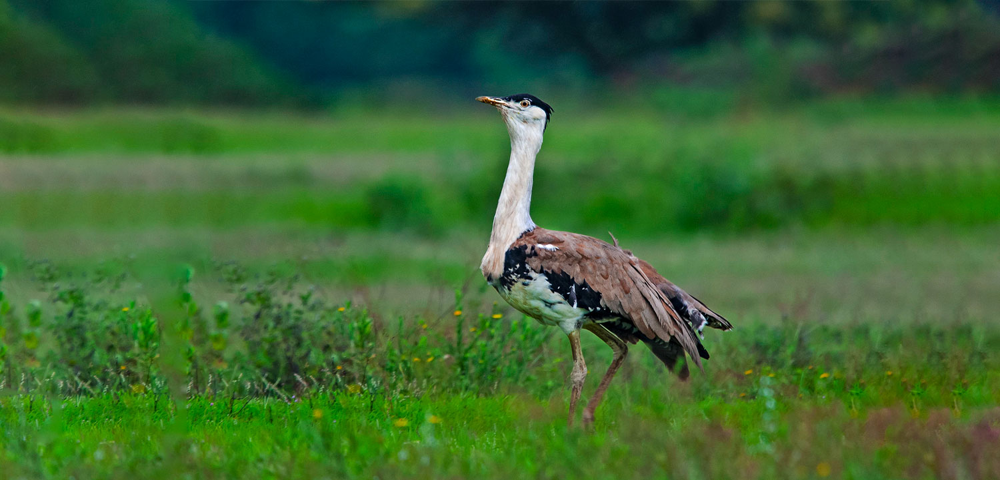
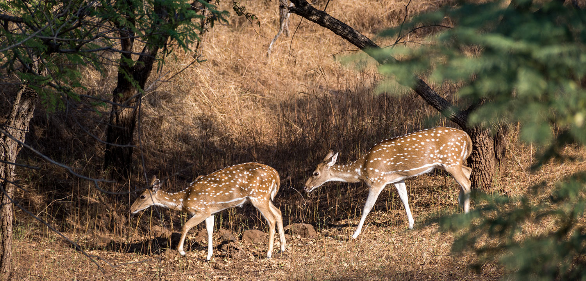
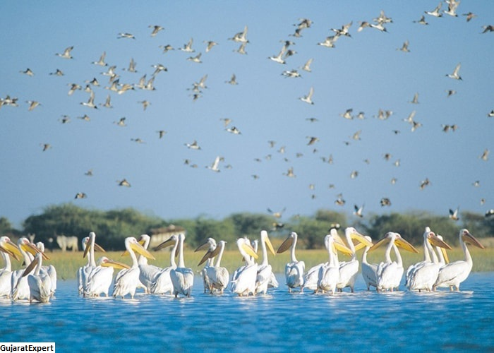
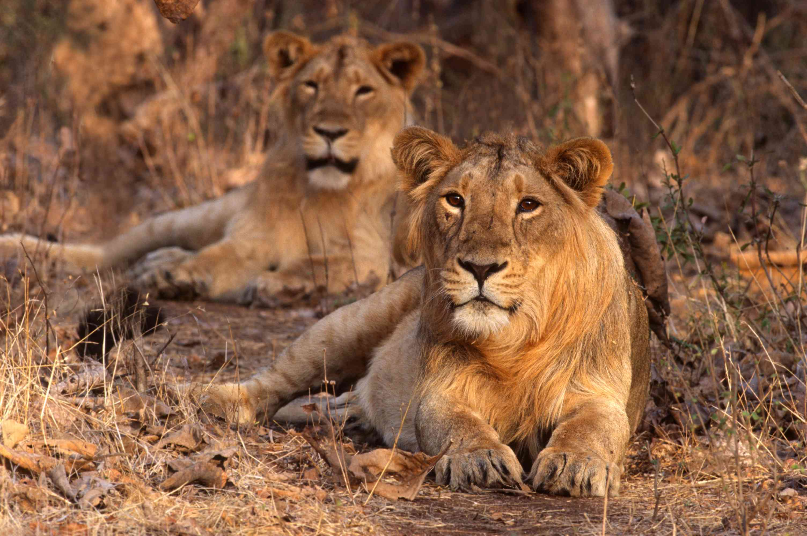

thumb_up
0
thumb_down
0
 The Sanctuary resides in the Naliya area of Kutch district. The Kutch Bustard Sanctuary was primarily built to save the Great Indian bustard from the effects of poaching and hunting. Kutch being a region of varied vegetation and topography comprising of grasslands, deserts, wetlands, and marshy swamps, the Kutch Bustard Sanctuary is primarily a grassland area dotted with desert vegetation of thorns and dry grass here and there. The birds are often spotted roaming around the sanctuary. "Ghorad" to the locals, the bustard is almost as big as the ostrich but unlike them is quite a good flier. However it prefers staying on the ground. Open areas attract the bustard more than enclosures and the bustard is mostly seen in the open, roosting or breeding. Apart from the Great Indian Bustard, the Kutch Bustard Sanctuary houses 20 other species of birds, namely, McQueen's Bustard, Lesser Florican, Stoliczkas, Bushchats, Merlins are some of the species to be spotted here. The co-existance of jungle cats, chinkaras, harriers and desert cats with the bustards, eagles, and other migratory birds more or less make a complete picture of the Wildlife in Gujarat.
 Barda Wildlife Sanctuary is also known as Rana Barda forest, as once this area belonged to Ranavav a city in the district of Porbandar, in Gujarat. It stretches over 193 square kilometers and was declared a wildlife sanctuary in 1979. The whole area is a study in undulating terrain, flat lands, dense vegetation, rivulets and streams. The Joghri River flows through the sanctuary and acts as a natural reservoir for the animals that take shelter here. If you are visiting Barda Wildlife Sanctuary, be prepared to see a whole array of wild animals like the chinkara, sambar, spotted deer, leopard, wolf and chameleons. Previously it was home to the rare Asiatic lions, but they have been moved to the Gir Sanctuary. Significantly enough, Barda Wildlife Sanctuary is a disturb-free area, where the rules and regulations against poaching are severe.
 The highest reserve of animals found here includes Chinkara or Indian Gazalle, Blue Bull which is a large Indian antelope; the male species is blue-grey with white markings while the female ones are brownish without horns. One can also find Spotted-deer with beautiful spots notable from a great distance; wild boar which is an Old World wild swine having a narrow body and prominent tusks from which most domestic swine come. Covering an area of 444 square kilometers, the Narayan Sarovar Chinkara Sanctuary is a marvel of its own. You have to drive for just 2 kilometers from Kutch District to reach Narayan Sarovar.
 his forested, hilly, 1412-sq-km sanctuary about halfway between Veraval and Junagadh is the last refuge of the Asiatic lion (Panthera leopersica). Taking a safari through the thick, undisturbed forests is a joy – even without the added excitement of spotting lions, other wildlife and myriad bird species It is the only home to the Asiatic lions in India. The national park remains closed from June 16th to October 15th every year; thus, you can plan your trip anytime in the rest of the months. Apart from Asiatic lions, there are various other animals, reptiles, and insects found in this national park.